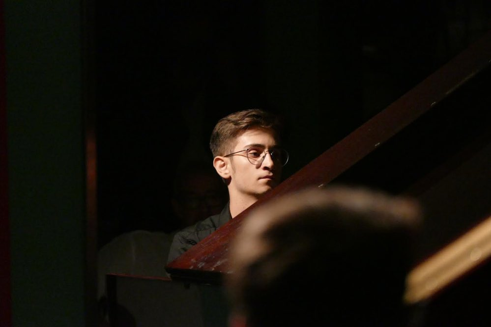

In arrivo · Roguelike di Boxe
The Sting
Un roguelike di boxe nello spirito di Punch-Out!!, in arrivo. Ne ho composto la colonna sonora — qui sotto puoi ascoltare uno dei temi dei boss.
Compositore Orchestrale · Game Audio
Composizione. Orchestrazione. Produzione. Mix. Master.
Tutto quello che serve al tuo gioco — da una sola mano.
Risposta entro 48h · Pipeline completa in-house · Pronto per FMOD

// Lavori 01
Nove tracce, nove mondi diversi. Il player ti segue mentre esplori il sito.
Stai immaginando questo suono nel tuo gioco?
Richiedi un preventivo// Implementazione 02
Non consegno solo le tracce — le costruisco in sistemi adattivi in FMOD, così la musica segue il giocatore in tempo reale. In The Sting mi sono occupato di tutto il comparto audio, dalla musica agli effetti sonori, implementando tutto in FMOD. Ecco come funziona.
// Horizontal re-sequencing

// Scoring Cinematico 03
Un rescore orchestrale integrale del film open di Blender Spring (2019) — lussureggiante ed emotivo, scritto per seguire la storia del corto battuta per battuta.

Un rescore integrale di Book of the Dead di Unity (2018) — atonale e inquietante, scritto e prodotto per seguire ogni stacco, respiro e ombra sullo schermo.

// Progetti 04
Un roguelike di boxe nello spirito di Punch-Out!!, in arrivo. Ne ho composto la colonna sonora — qui sotto puoi ascoltare uno dei temi dei boss.
Avventura piratesca — quanto a lungo riuscirai a far durare la tua leggenda? Realizzata per la Godot Wild Game Jam 2026 con Nemo, Afonso Silva e BluNotes. Colonna sonora interamente composta, prodotta e masterizzata.
Un metroidvania attualmente in produzione. Ho scritto la musica del primo boss — ascoltala qui sotto.
↳ clicca il nome di una traccia per ascoltarla subito
// Testimonianze 05
Grazie davvero per questo lavoro straordinario! È stato fantastico lavorare con te — ci siamo sicuramente per i progetti futuri.
La musica era incredibile — talento vero. Non lasciare che ti dicano il contrario.
Senza dubbio la miglior jam che abbia mai consegnato in tempo. Tutti hanno dato il massimo — e la colonna sonora ha superato ogni aspettativa.
Grazie per la musica straordinaria. Ha fatto la differenza.
// Chi 06
Mi sono formato al Conservatorio Giuseppe Verdi di Torino: ho perfezionato la tecnica pianistica con Caterina Vivarelli, ho imparato a comporre con il maestro Giulio Castagnoli e ho studiato film scoring con Ian Honeyman.
Le colonne sonore sono la mia ossessione da sempre. Nei videogiochi i miei preferiti in assoluto sono Undertale e Hogwarts Legacy; al cinema, qualsiasi cosa di John Williams, Ludwig Göransson o Hans Zimmer. Scelte scontate, lo so — ma se piacciono a tutti un motivo c'è.
// Servizi 07
Temi, biomi, musica dei boss, sting di UI, titoli di coda. Pronta per FMOD.
Musicisti veri, la mia rete. Archi, ottoni, legni, voci — turnisti registrati e prodotti uno per uno.
Partitura per direttore + parti staccate. Dallo schizzo alla notazione pronta per l'orchestra.
Stereo o stems. Game engine, trailer o streaming — scegli tu.
Raccontami il tuo mondo con il form di progetto (2 minuti). Ti rispondo entro 48 ore con una proposta su misura — non un template.
Compongo, orchestro e produco. Ascolti la direzione fin da subito e la modelliamo insieme, finché non calza a pennello sul tuo gioco.
Mixato e masterizzato — stereo, stems o un setup FMOD completo. Tutto arriva pronto da inserire nel tuo engine.
// FAQ 08
Ogni progetto viene quotato singolarmente in base ai minuti di musica, alla strumentazione e alle esigenze di implementazione. Compila il form di progetto e ricevi una proposta vera entro 48 ore — non un listino copia-incolla.
I giochi sono casa mia, ma scrivo anche per film, serie e trailer — i rescore qui sopra (Spring, Book of the Dead) sono musica scritta sulle immagini, che segue ogni stacco e respiro sullo schermo.
Raccontami del tuo gioco: l'atmosfera che cerchi, brani di riferimento se li hai e le tue tempistiche. Una build o del gameplay aiutano, ma anche solo un concept doc basta per cominciare.
// Contatti
Raccontami cosa stai costruendo.